App Overview
What This App Does
The Shift Assignment platform helps the Psychiatry Department manage shift scheduling fairly and efficiently. It covers the entire workflow:
Collect Availability
Create Google Forms to gather employee availability for each month.
Generate Assignments
AI-powered algorithm assigns shifts fairly based on constraints and history.
Track Fairness
Analytics dashboard shows shift distribution, trends, and fairness scores.
Exchange Shifts
Employees can request shift swaps with real-time notifications.
Ask the AI
Chat assistant answers questions about schedules, assignments, and fairness.
Calendar Export
Add shifts to Google Calendar with a single click from your profile.
User Roles
There are two roles in the app. Your role is determined by your email address:
Full access to all pages. Can create forms, generate assignments, manage employees, view analytics, and control page visibility for other users.
Access to Dashboard, Profile, Shift Exchange, Chat, and History (if enabled by admin). Can view their own shifts and request exchanges.
Navigation
The app has a collapsible sidebar on the left and a top header bar:
- Sidebar — Click the arrow at the bottom to collapse/expand. Shows all pages you have access to.
- Header — Shows the banner, your avatar, dark mode toggle, and notification bell.
- Notifications — Click the bell icon to see recent updates like published shifts or exchange requests.
- Dark Mode — Click the sun/moon icon in the header to toggle between light and dark themes.
Login
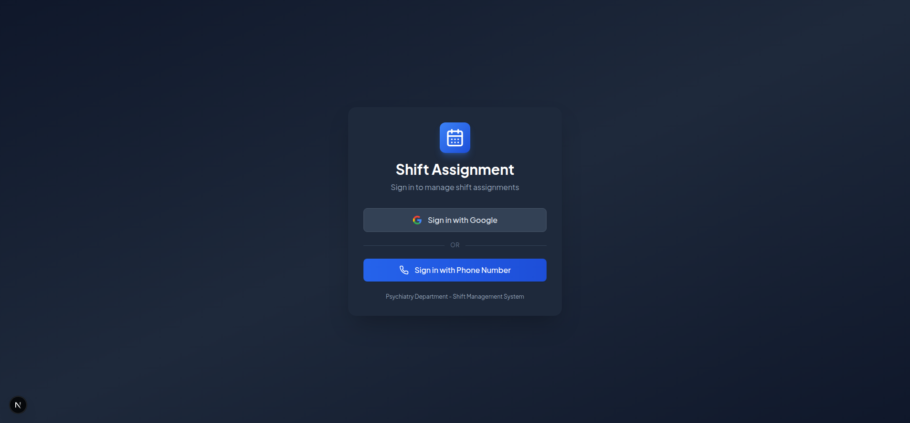
Two Ways to Sign In
Google Sign-In
Click "Sign in with Google" and choose your Google account. This is the fastest method — one click and you're in.
Phone Number
Click "Sign in with Phone Number", enter your Clalit email (@clalit.org.il) and Israeli phone number, then verify the SMS code.
Phone Login Steps
-
Enter Your Details
Type your Clalit email (must end in
@clalit.org.il) and your phone number in the format05X-XXX-XXXX. -
Receive SMS Code
Click "Send Code". You'll receive a 6-digit verification code via SMS within a few seconds.
-
Enter the Code
Type the 6-digit code and click "Verify Code". If the code expired, click "Resend Code" (available after 60 seconds).
Dashboard
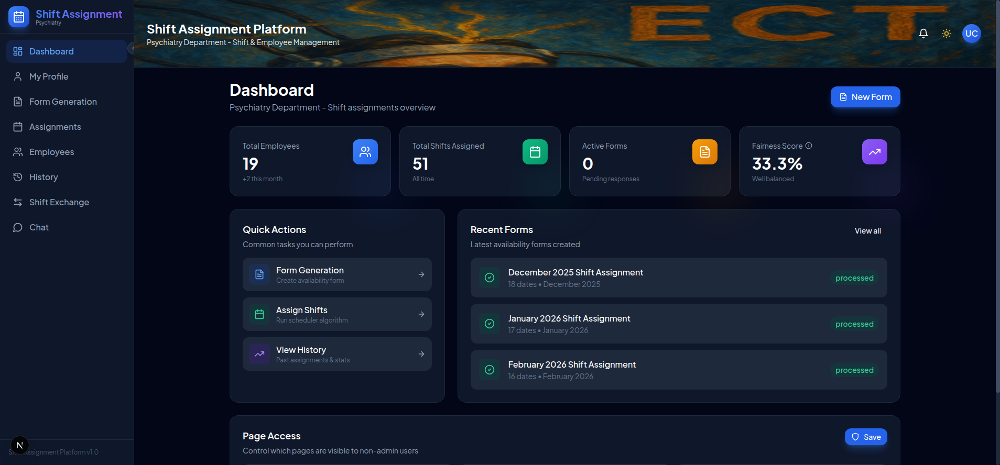
KPI Cards
At the top you'll see four summary cards:
Total Employees
Number of active employees in the system.
Total Shifts
Total shifts assigned across all months.
Active Forms
Forms currently open for responses.
Fairness Score
How evenly shifts are distributed (100% = perfectly fair).
Quick Actions
Three shortcut buttons take you directly to the most common tasks:
- Form Generation — Jump to creating a new availability form
- Assign Shifts — Go to the assignment wizard
- View History — Open fairness analytics
Recent Forms
Shows the last 3 forms with their status: Active (collecting responses) or Processed (assignments generated).
At the bottom of the Dashboard, admins can toggle which pages are visible to regular employees. Each page can be set to "All Users" or "Admin Only". Click "Save Settings" after making changes.
Form Generation
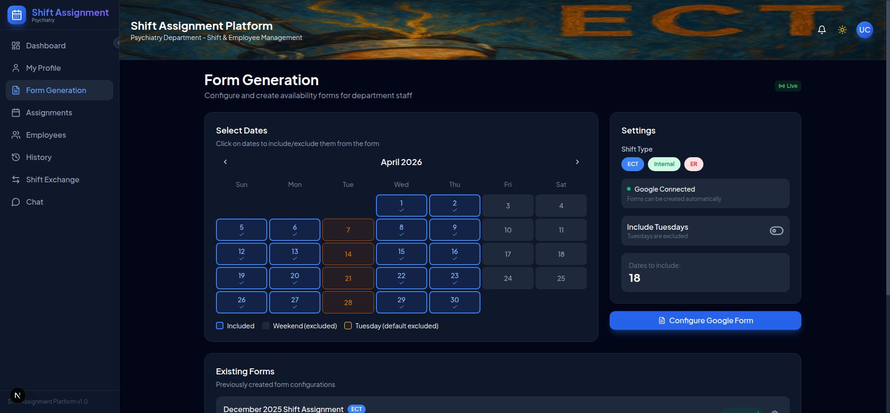
How It Works
This page lets you configure which dates to include in the monthly availability form, then generate a Google Form that employees fill out.
Step-by-Step Workflow
-
Choose the Month
Use the left/right arrows above the calendar to navigate to the desired month.
-
Select Shift Type
In the right panel, choose ECT, Internal, or ER. Each type has different rules (e.g., ECT excludes weekends by default).
-
Pick Dates
Click individual dates on the calendar to include or exclude them. Fridays and Saturdays are automatically excluded for ECT/Internal. Toggle "Include Tuesdays" if needed.
-
Configure the Form
Click "Configure Google Form". This saves the form settings and shows you the questions that will appear.
-
Generate Google Form
Click "Generate Google Form" to create the actual Google Form. It opens in a new tab for review.
-
Share with Employees
Copy the Share Link and send it to employees via email, WhatsApp, or any channel.
Calendar Legend
The green/red indicator in the settings panel shows whether you're connected to Google. If disconnected, log out and log back in with Google to reconnect.
Managing Forms
Below the calendar, you'll see existing forms. Each shows title, status badge, date count, and a delete button.
Shift Assignments
The Assignment Wizard (4 Steps)
A guided process to go from employee responses to published shifts. A progress bar at the top tracks your current step with numbered circles and checkmarks.
Step 1: Select a Form
Choose the month to assign shifts for. Each form card shows the title, shift type badge (e.g., ECT), date count, and status. Click a card to proceed.
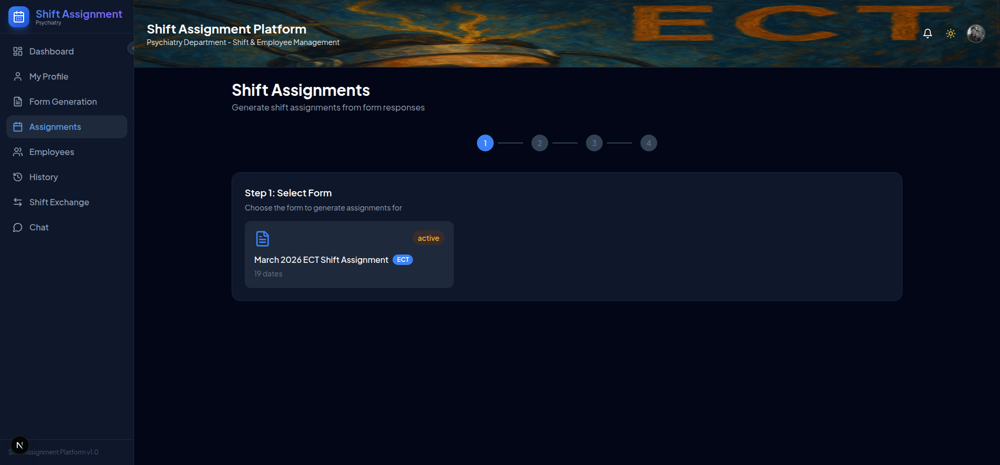
Step 2: Import Employee Availability
Choose how to get the employee data:
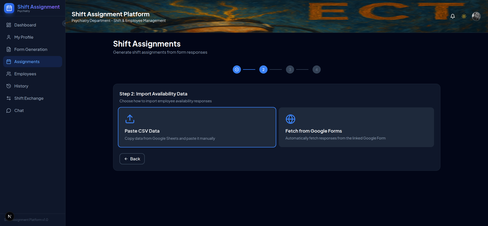
Fetch from Google Forms
If a Google Form is linked, click "Fetch from Google Forms". The app reads all submissions automatically via the Google API.
Paste CSV Data
Open your Google Form responses in Google Sheets, select all data (Ctrl+A), copy (Ctrl+C), and paste into the text area. The parser auto-detects employee names, dates, and availability.
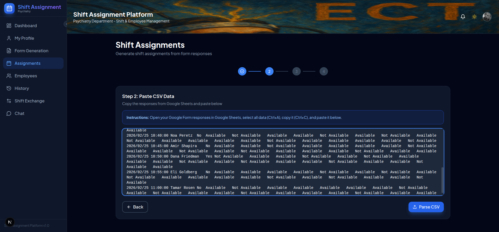
Step 3: Review & Validate
The app validates the imported data and displays a summary:
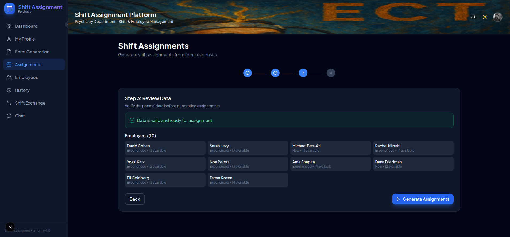
- Validation status — green check ("Data is valid and ready for assignment") or red errors to fix
- Employee cards — each card shows the employee name, New/Experienced badge, and count of available dates
- Warnings — non-blocking issues like low availability counts
Click "Generate Assignments" to run the scheduling algorithm.
The scheduler uses a fairness-first approach with backtracking constraint satisfaction. It considers each employee's total historical shifts, their availability, and hard constraints (max 2 shifts/month, no consecutive days, no same weekday twice, new employees limited to last 2 weeks) to find the most balanced assignment.
Step 4: Results & Publish
After the algorithm runs, you'll see a success banner with the shift type and count, a full calendar preview, and a shift distribution table.
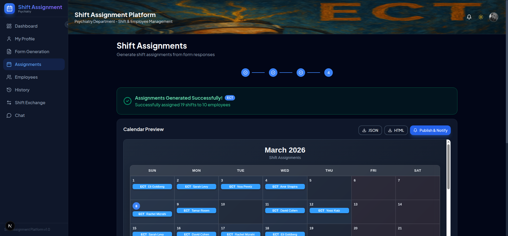
The Shift Distribution table below the calendar shows how shifts are balanced across employees:
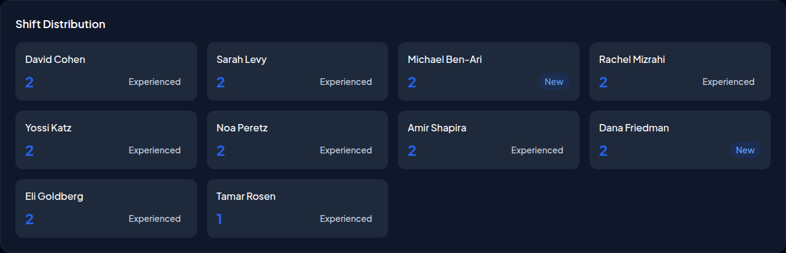
Available actions:
Download JSON
Export the raw assignment data as a JSON file for further processing.
Download HTML Calendar
Save the color-coded calendar as an HTML file for printing or email sharing.
Publish & Notify
Finalize the assignments, update history, and notify each employee of their shift dates with calendar links.
Employees
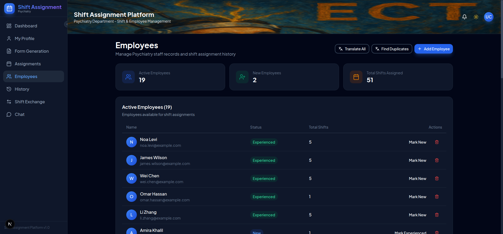
Overview Cards
Three cards at the top show: Active Employees, New Employees (first month), and Total Shifts Assigned across all history.
Adding an Employee
Click "Add Employee"
The button is in the top-right corner of the page.
Fill in Details
Enter the employee's name, email, and check "First month" if they're new to shifts.
Save
Click "Add Employee" in the modal. They'll appear in the active list.
Employee Table
The main table shows all active employees with:
- Name — the employee's display name
- Status — "New" (green badge) or "Experienced"
- Total Shifts — cumulative shifts from all months
- Actions — toggle new/experienced, deactivate (trash icon)
Duplicate Detection & Merging
Click "Find Duplicates" to scan for employees that might be the same person (e.g., Hebrew and English versions of a name). For each pair you'll see both names, similarity percentage, match type, and a "Merge" button. Use "Merge All" to merge all pairs at once.
Translate All
Click "Translate All" to convert Hebrew employee names to English. A confirmation dialog shows before proceeding. This uses AI translation and also updates all historical records.
History & Analytics
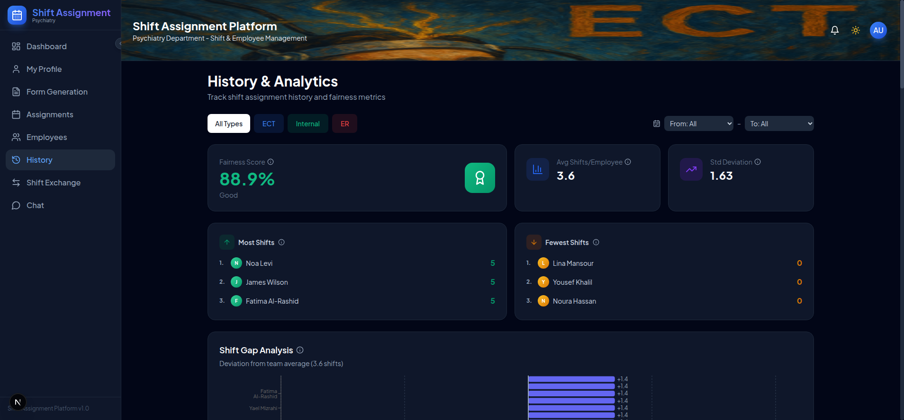
Filters
At the top of the page you can narrow down the data:
- Shift Type — buttons for All Types, ECT, Internal, ER
- Date Range — From/To month dropdowns
- Reset — clears date filters back to "all time"
Fairness Metrics
Five metric cards appear at the top:
Fairness Score
0–100%. Higher is better. Color-coded: green (>80%), yellow (50–80%), red (<50%). Hover for the formula.
Average Shifts
Mean number of shifts per employee in the selected period.
Standard Deviation
How spread out the shift counts are. Lower = more fair.
Most Shifts
Top 3 employees with the highest shift counts.
Fewest Shifts
Bottom 3 employees with the lowest shift counts.
Charts & Visualizations
The Analytics Dashboard includes 6 interactive chart tabs. Click any tab to switch views. Hover any data point for details.
1. Employee Trends
A line chart plotting each employee's cumulative shift count over time. Each employee is a separate colored line.
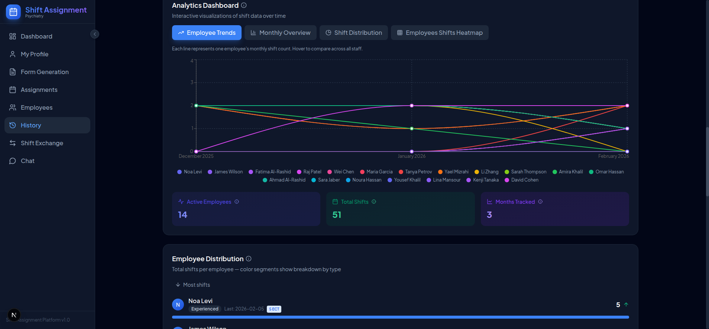
- X-axis — Months (December 2025, January 2026, etc.)
- Y-axis — Number of shifts assigned
- Lines — One line per employee, color-coded. Hover a line to see the exact count.
- What to look for — Lines should rise at similar rates. If one line climbs much faster, that employee is getting more than their fair share.
2. Monthly Overview
A dual-pane synchronized chart. The top pane shows stacked bars (ECT, Internal, ER shifts per month) while the bottom pane shows how many employees were active that month.
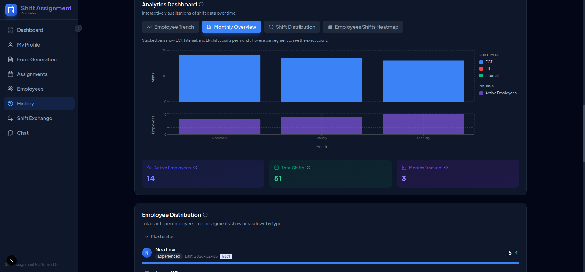
- Top pane — Stacked bar segments colored by shift type. Hover a segment to see the exact count.
- Bottom pane — Bar chart showing how many unique employees received assignments that month.
- Legend — Right side shows shift type colors and the "Active Employees" metric.
- What to look for — A healthy trend has consistent total shifts and a growing or stable employee base.
3. Shift Distribution
A nested donut chart showing the breakdown of shifts. The inner ring shows totals per shift type (ECT, Internal, ER). The outer ring drills into individual employees within each type.
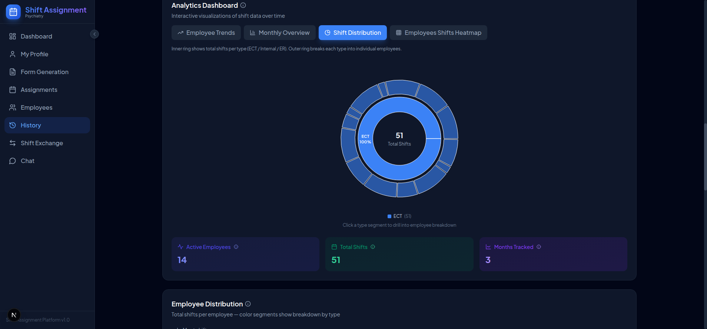
- Center — Shows total shift count across all types.
- Inner ring — One segment per shift type, sized by count. Hover for percentage.
- Outer ring — Click a type segment to drill down and see each employee's contribution.
- What to look for — An even outer ring means shifts are spread fairly. One dominant segment means one employee is assigned disproportionately.
4. Shift Gap Analysis
A horizontal diverging bar chart centered on the team average. Bars extending right mean the employee has more shifts than average; bars extending left mean fewer.
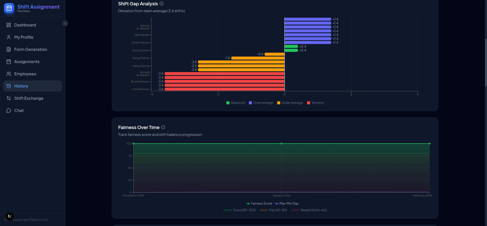
- Center line (0) — The team average. Values like "+1.4" mean 1.4 shifts above average.
- Color coding — Green (balanced, near zero), Blue (over average), Orange (under average), Red (extreme deviation).
- What to look for — In a perfectly fair system, all bars would be near zero. Long red bars on either side need attention.
5. Fairness Over Time
A filled area chart tracking two metrics month by month: the overall Fairness Score (0–100%) and the Max-Min Gap (difference between the most and least assigned employees).
- Fairness Score line — Higher is better. Green zone (80–100%), yellow (60–80%), red (<60%).
- Max-Min Gap line — Lower is better. A rising gap means growing inequality.
- What to look for — The fairness score should stay in the green zone. If it drops into yellow/red, the scheduling algorithm may need adjustment.
6. Employees Shifts Heatmap
A color-intensity grid with employees as rows and months as columns. Darker purple cells mean more shifts that month. Rows are sorted by total shift count (most to fewest).
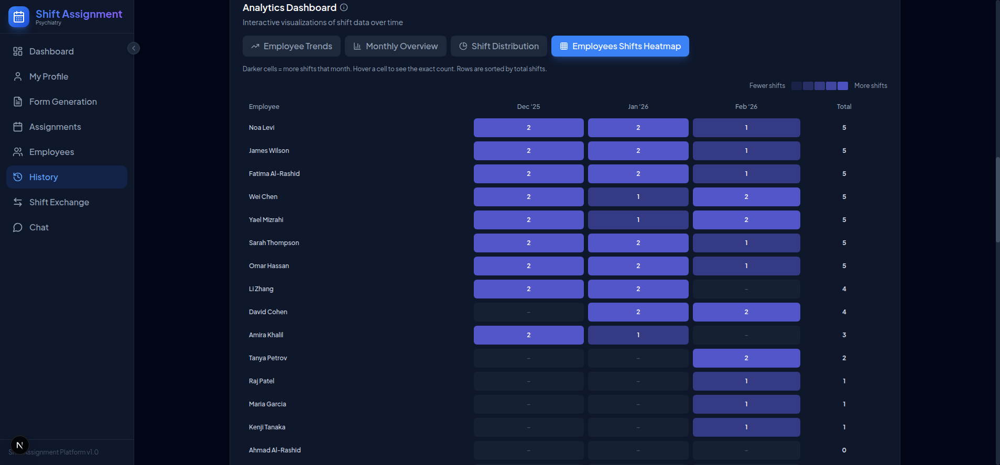
- Color scale — Light (0–1 shifts) to dark purple (2+ shifts). A gradient legend appears at the top.
- Total column — Rightmost column sums all months for each employee.
- Total row — Bottom row sums all employees for each month.
- What to look for — Uniformly medium-shaded cells across all rows = fair distribution. A row of dark cells = overworked employee. A row of dashes = underutilized.
Monthly Calendar History
Below the charts, each month with assignments is listed. Click a month to open a calendar popup showing all shift assignments in a color-coded grid. Use the Print button inside the popup to print or save as PDF.
Shift Exchange
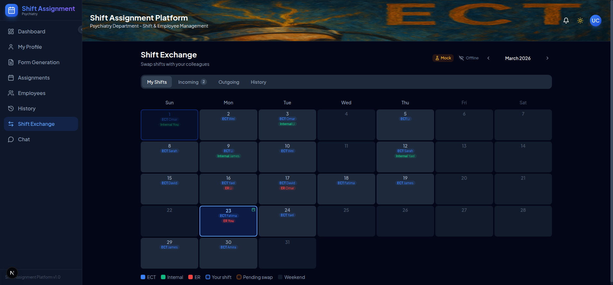
How Shift Swaps Work
If you can't make a shift, you can request another employee to take it. The whole process happens in real-time with WebSocket notifications — no page refresh needed.
The Four Tabs
My Shifts
View your assigned shifts for the selected month. Click a shift to initiate a swap request.
Incoming
Swap requests from other employees asking you to take their shift. Accept or decline with one click. Badge shows count.
Outgoing
Requests you've sent to others. You can cancel pending requests here.
History
Completed and rejected exchange records for reference.
Step-by-Step Exchange Flow
Here's the complete flow for requesting and completing a shift swap:
-
Step 1: Select your shift & browse candidates
On the My Shifts tab, click the shift you want to swap. A Candidates panel slides open on the right showing every eligible colleague. Each candidate lists the dates they can offer in return — click any date pill (e.g. "15 Sun") to start a swap with that specific date.
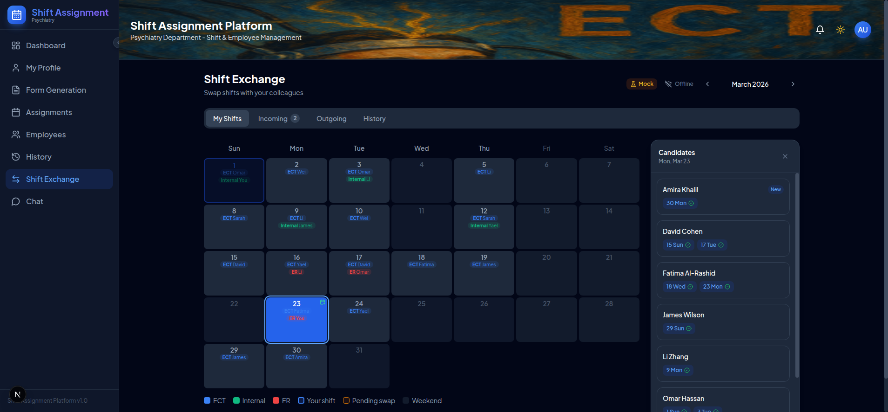
March 23 selected — 8 candidates available with their swappable datesThe system automatically filters candidates using constraint rules: max 2 shifts per month, max 1 per week, no consecutive days, and form-declared availability. Employees tagged "New" are recent hires with limited scheduling windows.
-
Step 2: Confirm the swap details
After clicking a candidate's date, a Confirm Swap Request modal appears showing exactly which dates will be exchanged. You can optionally add a reason (e.g. "Family event") before sending.
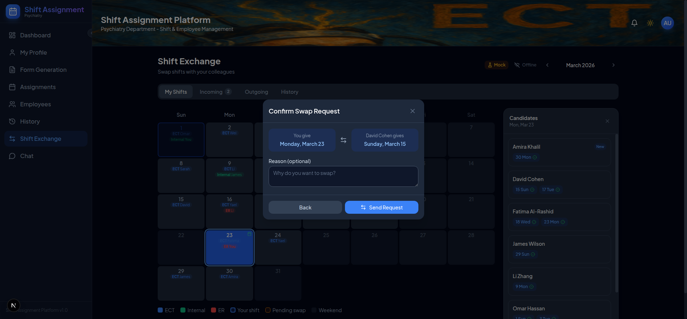
Confirm modal — Review the swap before sendingClick "Send Request" to submit, or "Back" to choose a different candidate. The reason field is optional but helps the other employee understand why you're requesting the swap.
-
Step 3: Track your request (Outgoing tab)
After sending, switch to the Outgoing tab to see all your pending requests. Each card shows both sides of the swap — your shift and theirs — along with shift type badges (ECT, Internal, ER) and the reason you provided.
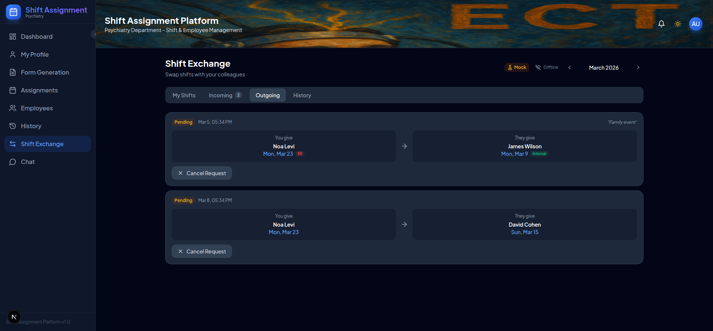
Outgoing tab — Two pending requests with Cancel optionYou can cancel any pending request before the other person responds. The target employee receives a real-time notification via WebSocket.
-
Step 4: Respond to requests (Incoming tab)
When a colleague sends you a swap request, it appears in your Incoming tab with their reason. Each request shows the shift details for both sides with color-coded type badges, plus large Accept and Decline buttons.
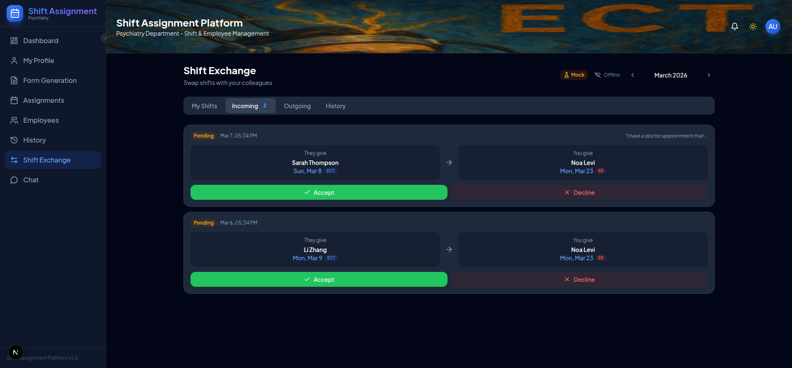
Incoming tab — Accept or Decline swap requests from colleaguesThe badge count on the tab (Incoming 2) shows how many unresolved requests are waiting. Accepting a swap immediately updates the schedule for both employees.
-
Step 5: Review the audit trail (History tab)
Every completed, declined, or cancelled request moves to the History tab with a color-coded status badge and timestamp. Declined requests also show the decline reason.
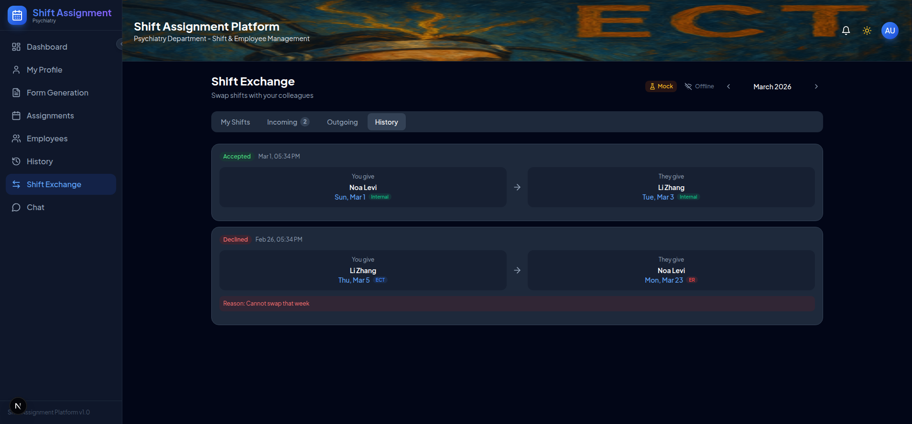
History tab — Full audit trail of all exchange outcomes- Accepted — Swap completed, both schedules updated automatically
- Declined — The other employee chose not to swap, with their stated reason
- Cancelled — You withdrew the request before a response was given
Real-Time Notifications
The page uses a WebSocket connection (shown as "Live" or "Offline" in the header). When someone responds to your swap request, you'll see the update instantly without refreshing.
AI Chat Assistant
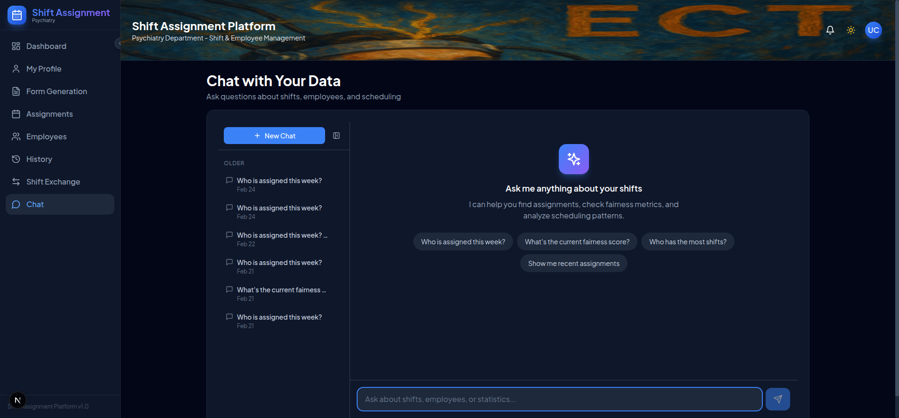
What You Can Ask
The chat assistant has access to all shift data, employee records, and history. Try questions like:
How to Use
Type Your Question
Type in the input field at the bottom, or click one of the suggestion buttons when starting a new chat.
Send
Press Enter or click the send button. The AI responds in real-time with streaming text.
Continue the Conversation
Ask follow-up questions — the assistant remembers context within the same chat.
Chat History
Previous conversations appear in the left sidebar. Click any conversation to load it. Click "New Chat" to start fresh.
Profile
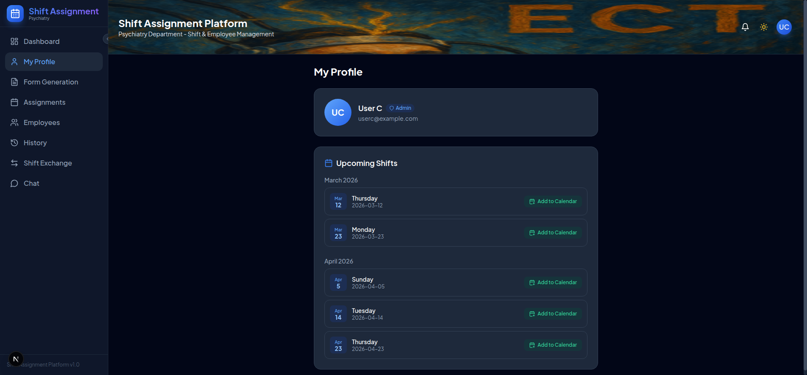
Your Profile Card
Shows your profile picture (or initials), name, email, and role badge (Admin or Employee).
Upcoming Shifts
If your account is linked to an employee record, you'll see your upcoming shifts grouped by month. Each shift shows the date, day of the week, and an "Add to Calendar" button.
Monthly Workflow Summary
Create the Form (Forms page)
Admin selects month, picks dates, chooses shift type, and generates a Google Form.
Collect Responses
Share the form link with employees. Wait for everyone to submit their availability.
Generate Assignments (Assignments page)
Admin fetches responses, reviews the data, and runs the scheduler algorithm.
Publish & Notify
Review the calendar, then click Publish to notify all employees of their shifts.
Track & Exchange
Employees view their shifts on Profile, check History for fairness, and use Shift Exchange if they need to swap.
Frequently Asked Questions
Why can't I see certain pages in the sidebar?
Your admin controls which pages are visible to employees. If a page is missing, ask your admin to enable it in the Dashboard's "Page Access Control" section.
How is the Fairness Score calculated?
The fairness score measures how evenly shifts are distributed. It's based on the standard deviation of shift counts. A perfectly even distribution scores 100%.
What does "New Employee" mean for scheduling?
New employees (first month doing shifts) are restricted to only be assigned shifts in the last 2 weeks of the month. This allows them to settle in before taking shifts.
Can I undo a published assignment?
Publishing sends notifications but doesn't lock the data. An admin can re-run the assignment for the same month. However, employees who already added shifts to their calendar would need to update manually.
The chat says "rate limited" or "AI not available"
The AI service has daily usage limits. Wait a minute and try again, or try later in the day. If the issue persists, the admin may need to check the AI provider configuration.
How do I add my shifts to Google Calendar?
Go to your Profile page and click "Add to Calendar" next to each shift. This opens Google Calendar with the event pre-filled. You can also click calendar links from the notification bell.
Google Forms says "Not authenticated"
Sign out of the app and sign back in with Google. This refreshes the Google connection and re-grants the necessary permissions for Forms and Drive access.